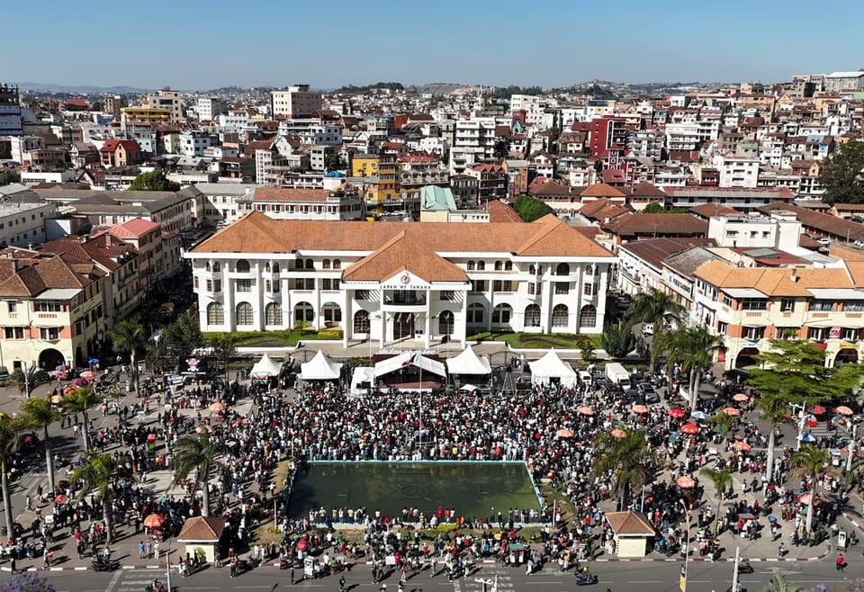

世界苦茶10月15日新闻 | 38条 | 中国国考放宽35岁门槛

中国国考放宽35岁门槛 | 中国制裁韩国造船业巨头 | 香港立法会选举弃选潮 | 小米电动车起火致死 | 大疆对美军工企业名单上诉 | 中美互征港口费加剧贸易战
已分类每日新闻｜2025-10-15
中国国考放宽35岁门槛 | 中国制裁韩国造船业巨头 | 香港立法会选举弃选潮 | 小米电动车起火致死 | 大疆对美军工企业名单上诉 | 中美互征港口费加剧贸易战
苦茶数据
美元兑人民币：7.13（昨日7.14，前日7.13）
美元兑日元：151.43（昨日151.84，前日152.46）
上证指数：3871（昨日3865，前日3889）
标普500指数：6644（昨日6654，前日6633）
比特币：112535（昨日111985，前日114409）
布伦特原油：62.25（昨日62.76，前日63.66）
中国新闻
• 中国“国考”放宽年龄限制 打破35岁门槛。
有“国考”之称的中国中央机关及直属机构考试，今年放宽年龄要求，打破以往的“35岁门槛”。据中新网报道，2026年度中央机关及其直属机构2026年度考试录用公务员报名星期三启动，共计划招录3万8100人。官方公告显示，报考者年龄一般为18周岁以上、38周岁以下；对于2026年应届硕士、博士研究生，放宽到43周岁以下。往年“国考”要求报考者年龄一般为18周岁以上、35周岁以下。对于应届硕士、博士研究生，最多放宽到40周岁以下。“国考”打破35岁门槛，被舆论认为具有风向标意义。随着中国人口老龄化进程加快，35岁以上人群正成为社会主力军，再加上民众受教育程度提高，就业年龄推后。
**• 国务院10月14日开经济形势专家和企业家座谈会。 **
徐奇渊（社科院美国所副所长）陈斌开（央财副校长）杨赫（工银现代金融研究院）张瑜（华创证券首席宏观分析师）李洪凤（中国电气装备集团）江鑫（合肥产投集团）周宇翔（黑湖科技）叶国富（名创优品）发言。李强讲话：要以更宽的视野把握当前经济形势，从人流、物流、信息流、资金流看经营主体的活力，坚定信心、直面问题。加力提效实施逆周期调节。加强跨年度工作衔接，更快更好发挥政策效能。综合治理行业无序、非理性竞争。发展创业投资基金。积极开拓多元化市场，完善海外综合服务体系，推动实施一批标志性外资项目。
• 香港立法会选举多名议员弃选 李家超：尊重个人决定。
香港将于12月举行新一届立法会选举，多名现任议员近日先后宣布弃选。行政长官李家超周二回应时表示，任何组织因换届而出现人事更替属于正常，会尊重他们的决定。李家超周二出席行政会议前回应媒体提问时指出，一直重视立法会议员意见，每年《施政报告》吸纳了很多议员建议。他赞扬本届立法会务实高效，四年会期合共通过约130条法案，较上届同期增加超过六成，更审议和全票通过《维护国家安全条例》，行政立法共同为香港完成26年多未完成的宪制责任。李家超鼓励爱国爱港、有才能及有志服务香港人士积极争取提名及报名参选，同时呼吁市民踊跃投票，特区政府会确保选举公平公正、诚信及安全有序进行。
• 大疆对被列入五角大楼“中资军工企业”名单提出上诉。
中国无人机制造商大疆对被列入美国国防部“与中国军方有关公司”名单提出上诉 大疆多年来一直对美国政府的分类提出异议。该无人机制造商辩称其仅生产民用产品。这家总部位于深圳的公司周一向美国哥伦比亚特区巡回上诉法院提起上诉，要求撤销联邦法院此前认定其应继续留在国防部黑名单上的裁决。大疆去年十月曾提起诉讼，称其既非中国军方所有亦不受其控制，也未为中国国防工业基础作出贡献。虽然被列入国防部黑名单并不意味着立即实施禁令，但这一举措向美国实体发出明确警示，提示与被列公司开展业务存在风险，同时也对国会及行政部门其他机构施加更大压力，促使其出台进一步限制。
• 前官媒编辑警告不要在中国社交媒体上出现“集体沉默”。
前《环球时报》总编辑胡锡进警示中国社交媒体上的“集体沉默” 前《环球时报》总编辑胡锡进表示，社交媒体上应当为“公民交流信息”留出更大空间。“在中国的互联网环境中，应有一种尊重个人权利的集体共识，”胡锡进称。他指出，近年来，名人、政府官员、大学讲师以及民营企业的中高层管理者在网络上都变得沉默。胡锡进补充称，这“是公共信息领域的损失”。他警告说，这“使公共话语格局不完整，导致在一个开放社会不应存在的‘集体噤声’”。胡锡进将此归因于“社会包容度的下降”，并表示，当个人在网上表达观点时，“招致麻烦的风险越来越大，甚至可能牵连到他们的雇主”。“制度应在宪政秩序内引导并维护开放与自由，”他写道。
印太新闻
• 全球变暖，日本夏季42年来长了3周。
三重大学立花教授谈季节的「两季化」 日本三重大学的研究团队发现，1982年至2023年的42年间，日本的「夏季时长」增加了约3周。「冬季时长」基本未变，春季与秋季则不断缩短，呈现出「两季化」趋势。夏季时长呈逐年增加的趋势。该团队警示称：「全球变暖导致的海面水温上升是主要原因。若变暖趋势持续，‘长夏+长冬’的两季化现象将进一步加剧」。此次研究由三重大学研究所硕士二年级学生泷川真央与立花义裕教授等人共同开展。日本气象厅将6月至8月定义为夏季，并未按气温进行界定。泷川与立花教授等人将日本从北海道至九州的范围划分为约200个区域。
• 大坂世博会落幕，带来哪些经济效应。
大坂关西世博会于10月13日闭幕。本届共有158个国家和地区参展，创下日本国内举办的世博会的最高纪录，入场人数累计超过2500万人。最后还发表了希望各方分别继承「设计未来社会，让生命绽放光彩」这一本届世博会理念的《大坂关西世博会宣言》，并将接力棒交给了2030年的下届世博会主办城市——沙乌地阿拉伯利雅得。截至10月12日，本届世博会的累计普通入场者人数为2529万人。低于预期的2820万人。截至10月3日，门票总销量为2206.7万张。
• 日本废除「访日客免税」的呼声渐高。
在日本的百货商店里，访日游客出示护照后，可获得商品所含消费税的日元退税。购物资讯与护照号码绑定在一起 | 9月下旬，松屋银座店的免税柜台挤满了访日游客。访日客出示护照后，便可获得商品所含消费税的日元退税。购买资讯与护照号码绑定在一起。这家店铺2024年度的免税销售额达到577亿日元，比上年度增长71％，占总销售额的47％。日本观光厅的数据显示，2024年访日游客消费额超过8万亿日元，10年里增至4倍。为消费额扩大提供有力支撑的是免税店。免税店遵循的原则是，消费税仅针对日本国内消费征收。
科技新闻
• 您很快就可以在 ChatGPT 上购买沃尔玛的商品。
沃尔玛与OpenAI合作，允许用户通过其热门聊天机器人ChatGPT直接浏览并购买商品，这家全球最大的零售商希望利用人工智能在在线购物方面超越竞争对手亚马逊。沃尔玛首席执行官道格·麦克米伦周二在一则公告中表示，零售商当前的在线购物体验只是“一个搜索栏和一长串商品回应”。他称这将因人工智能能够提供更具多媒体性和更个性化答案的能力而改变。沃尔玛发言人告诉CNN，该功能将于秋季上线，提供沃尔玛大量商品以及来自第三方卖家的服装，娱乐和食品。山姆会员店目录中的商品将随后上线。沃尔玛将使用OpenAI最近宣布的“即时结账”工具。
• 中国开始批量生产下一代量子雷达探测器，用于跟踪F-22等战机。
中国开始批量生产下一代量子雷达探测器以追踪F-22等隐身战机——被称为“光子捕手”的设备可探测最小能量单位，并被视为为量子通信网络等重大项目铺路 中国宣布已开始批量生产全球首款具有四通道的超低噪单光子探测器，暗示其在从日常通信到国防等各领域的强大应用前景。该装置被称为“光子捕手”，能够探测单个光子——最小的能量单元，使其成为量子通信和用于隐身飞机探测与跟踪的量子雷达等前沿技术的核心部件。这一成果由安徽省量子信息工程技术研究中心实现，并于上周五由中国科技部主管的《科技日报》报道。顾名思义，单光子探测器是一种能够探测单个光子的超灵敏设备。当人眼观看图像时，无数光子同时进入眼睛。
• SpaceX 发射其巨型“星舰”火箭第11次试飞。
SpaceX周一又发射了一枚巨型Starship火箭进行测试飞行，再次取得成功，飞行半圈地球并像上次一样投放了模拟卫星。Starship——有史以来最大，最强的火箭——从德克萨斯州最南端的夜空中轰鸣升空。助推器按计划分离并在墨西哥湾进行了受控重入，整艘飞船掠过太空后降入印度洋，但未能回收。SpaceX的丹·霍特在员工欢呼中宣布：“嘿，欢迎回到地球，Starship。真是了不起的一天。”这是全尺寸Starship的第11次试飞，SpaceX创始人兼CEO埃隆·马斯克计划用它将人类送往火星。NASA的需求更加迫切。
• 谷歌将斥资150亿美元在印度建AI枢纽。
谷歌本周二宣布，未来五年将在印度投资150亿美元，建立其在该国的首个人工智能枢纽。这将是谷歌对印度迄今为止最大规模的投资。谷歌在印度的首个人工智能中心将建在南部印度南部安得拉邦的维沙卡帕特南。谷歌在一份声明中表示，该中心将成为谷歌在美国本土以外最大的数据中心以及全球最大的人工智能中心之一，包括支持千兆瓦级数据中心的广泛的能源基础设施和光纤网络。这项投资凸显了谷歌在全球人工智能竞赛中越来越把印度作为关键技术和人才基地。对印度而言，这笔投资将带来高价的基础设施和巨额外商投资，其规模足以加速其数字化转型的雄心。
经济新闻
• 小米SU7起火致一死 隐藏式门把手设计引争议。
小米SU7型号电动汽车本周再发生起火事故，驾驶员被困车内不幸身亡。多名路人试图救人却未能打开车门，隐藏式车门把手设计再度引发争议。受事故影响，小米股价星期一盘中一度下挫8.7％，创今年4月来最大跌幅。该股过去两天累计下跌6.6%。根据四川成都警方微博账号“成都公安”发布的警情通报，星期一凌晨3时18分许，成都市天府大道南段发生一起交通事故。31岁邓姓男子驾车与前方另一辆小型轿车发生碰撞，随后越过道路中央绿化带，起火燃烧。这起事故造成邓姓男子死亡，涉事两车不同程度受损。经检测，邓姓男子涉嫌酒后驾驶。成都警方没有说明涉事车型，但中国媒体报道和微博等社媒平台视频显示，邓姓男子驾驶的是一辆小米SU7。
• 娃哈哈取回桶装水销售权。
娃哈哈时隔半年多取回桶装水的销售权。澎湃新闻星期二引述两个独立信息源报道，浙江娃哈哈饮用水有限公司已重新拿回桶装水的销售权。知情者说，浙江娃哈哈饮用水依然是产销一体的公司。据报道，去年底，时任娃哈哈集团董事长的宗馥莉，要求把浙江娃哈哈饮用水的桶装水业务，转移到杭州迅尔城通商贸有限公司。今年4月，在没有签订协议的情况下，经销商向杭州迅尔城通商贸完成下单、发货和开具了发票等实质业务转移。天眼查资料显示，浙江娃哈哈饮用水成立于2016年3月，法定代表人是娃哈哈创始人宗庆后。杭州迅尔城通商贸成立于2022年，法定代表人是严学峰，宗馥莉任董事。宗馥莉已在今年9月向娃哈哈辞去公司法人代表。
• 中国晶片制造商子公司遭荷兰接管 北京禁止该公司从中国出口产品。
中国晶片制造商闻泰科技旗下的荷兰子公司安世半导体，星期二称已被中国政府禁止从中国出口产品。据法新社报道，安世半导体周二表示，中国政府已禁止该公司从中国出口产品，公司正“积极与北京当局接洽”，以争取豁免。荷兰政府上星期天公告，安世半导体内部存在严重治理缺陷，担忧关键技术被转移至闻泰科技。荷兰经济事务部在当地时间9月30日援引冷战时期的《物资供应法》，向安世半导体下达部长令，在未来一年内不得对资产、知识产权、业务及人事安排等进行任何调整，理由是可能对“荷兰及欧洲的经济安全构成风险”。闻泰科技上星期天晚发表声明，批评荷兰政府此举是基于地缘政治偏见的过度干预，而非基于事实的风险评估。
• 中美贸易战延烧造船业 北京制裁韩国造船巨头美国子公司。
中美经贸摩擦从稀土领域再延伸至海运与造船产业。两国开始对彼此船舶互征特别港口费的同一天，北京星期二宣布新一轮反制措施，制裁韩国造船巨头韩华海洋旗下的五家美国子公司。美国去年4月援引该国贸易法中的“301条款”，对中国海事、物流和造船业展开调查；今年4月宣布，所有与中国有关联的船只，自10月14日起停靠美国港口须按吨位缴纳费用。此举旨在促进美国造船业发展，并遏制中国造船业的主导地位。中国商务部发言人星期二在官网公告，为反制美国301调查措施，经国家反外国制裁工作协调机制批准，决定将韩华海洋旗下五家美国子公司列入反制清单。
• 特朗普因大豆被冷落威胁对中国实施食用油禁运。
特朗普政府威胁“终止与中国的商业往来”，以报复北京仍拒绝购买美国农民的大豆 美国总统唐纳德·特朗普周二称中国在不购买美国产大豆一事上“经济上敌对”，并威胁将停止从中国进口食用油及其他产品以示报复。“我们正在考虑终止与中国有关食用油及贸易其他部分的商业往来，作为报复，”他表示。“举例来说，我们完全可以自己生产食用油；不需要从中国购买。”周二早些时候，美国贸易代表詹姆森·格里尔在接受CNBC采访时表示，这些新管制已破坏双方解决贸易分歧的努力。对此，特朗普已对中国商品普遍征收关税，并对来自众多其他国家的产品采取了类似措施。
• 特朗普对西班牙说：要增加国防开支，否则将面临“惩罚性”关税。
美国总统唐纳德·特朗普周二威胁要对西班牙实施关税，理由是其国防开支过于宽松，并称马德里拒绝达到北约基准“令人难以置信地不尊重”。“我对西班牙非常不满。他们是唯一一个没有把数字提高到5%的国家。
• 欧盟准备仿效中国作法，要求在欧运营的中国企业必须进行技术转让。
据彭博报道，欧盟正考虑强制措施，中国企业若想在欧盟境内运营，必须向欧洲公司交出技术，旨在让欧盟工业更具竞争力的强硬措施。这些措施将适用于希望进入汽车、电池等关键数字与制造业市场的企业，还将要求这些企业使用一定比例的欧盟商品或劳动力，并在欧盟境内实现产品增值。强制设立合资企业也是正在讨论的选项之一。据知情人士表示，这些预计将在11月出台的规则，表面上适用于所有非欧盟企业，但其真正目标是防止中国的制造实力压垮欧洲工业。受到补贴支持的中国产品已经席卷欧盟工业，而北京即将对稀土矿实施的新出口限制，也正在威胁压缩欧洲制造商的生存空间。但以中国的贸易保护主义方式反制中国，势必引发强烈反弹。
• 国际货币基金组织上调美国经济增长前景，称特朗普的关税造成的扰动低于预期。
国际货币基金组织对美国增长前景比数月前更为乐观，但仍比去年黯淡 华盛顿——国际货币基金组织周二表示，由于特朗普政府的关税迄今为止并未像预期那样造成重大扰动，美国和全球经济今年的增长将比此前预测略好，但该机构也警告，大规模关税仍构成风险。在其具有影响力的半年期预测《世界经济展望》中，国际货币基金组织预计美国经济在2025年将增长2%。这一数字略高于该机构在7月更新时预测的1.9%和4月的1.8%。IMF表示，美国明年应增长2.1%，也比先前预测高出0.1个百分点。不过，与一年前相比，其当前预测仍有所下调，表明这家国际借贷机构预计关税会削弱美国经济，部分原因是增加了企业的不确定性。去年10月。
• 欧盟敦促七国集团对中国稀土出口限制作出回应。
丹麦霍尔森斯——欧盟贸易专员周二表示，欧盟不会在与七国集团伙伴协调后对中国最新的稀土出口限制采取强硬回应感到退缩。“这是被视为一个关键问题，”马罗斯·舍夫乔维奇在丹麦出席欧盟贸易部长会晤前表示，称中国此举是对被限制原材料的“戏剧性”扩大，使已经严峻的局势“恶化”。舍夫乔维奇表示，他已与美国商务部长霍华德·卢特尼克讨论了这一情况，双方同意“在首次讨论后不久举行一次七国集团视频通话会比较妥当”。七国集团包括美国、加拿大、德国、法国、意大利、英国和日本。
• 尽管存在贸易争端，中美周一举行了“工作层面会谈”。
尽管贸易紧张局势再度升级，中国商务部表示中美双方周一仍进行了“工作层面”会谈，并敦促美国在交往中“拿出诚意”。商务部周二在一份声明中表示：“美国不能在恐吓、威胁将实施新限制的同时与中国对话。这不是处理对华关系的正确方式。中国敦促美方立即纠正错误做法，为对话拿出诚意。”尽管气氛升温，商务部称双方仍在今年早些时候贸易谈判期间建立的双边经贸磋商机制框架下保持沟通。该声明此前回应了美国贸易代表詹姆森·格里尔周日的评论，格里尔称北京扩大稀土出口管制令美方措手不及，并称北京拒绝就此议题进行讨论。
• EV降价从中国波及全球。
美国纯电动汽车巨头特斯拉10月7日将美国主力车型的最低价格下调了1成。日产汽车也将在日本把2026年进行全面改进的主力纯电动汽车的价格设定为比以前低。在EV率先普及的中国，由于内需不足导致库存增加，各企业致力于降价和出口。「EV通缩」似乎已开始波及全球，但受中美对立带来的供应链分断的影响，成本削减存在局限性。特斯拉7日在美国等地下调了2款主力车型的价格。大量低价销售的SUV「Model Y」的最低价降至3万9990美元，比原来的最低价下降了5000美元。减少电池容量，续航里程缩短1成。
俄乌战争
• 俄罗斯考虑对加油站实施价格上限，专家警告将出现大量“售罄”标志。
据俄罗斯亲政府媒体《消息报》10月14日报道，随着全国燃料短缺加剧，俄罗斯联邦反垄断局已收到对加油站实施最高价格上限的请求。该提议由俄罗斯国家汽车联盟发起，正值乌克兰对俄石油基础设施日益升级的无人机袭击加剧供应危机之际。该请求敦促利用与2024年均值和通胀水平挂钩的地区指数对燃料价格设定上限。“我们认为在加油站引入价格上限——一种特殊的控制机制——是适当的，”汽车联盟负责人安东·沙帕林在接受《消息报》采访时表示。反垄断机构确认已收到该提议，并表示将按程序审议，称其监测全国1.2万座加油站的燃料价格。自夏末以来开始的燃料短缺已蔓延至多个地区。
• 美国财政部长会见乌克兰总理，承诺对俄罗斯施加更大压力。
编者按：本文已更新补充细节。美国财政部长斯科特·贝森特于10月14日会见了乌克兰总理尤利娅·斯维里登科，重申华盛顿对乌克兰主权和长期安全的承诺。贝森特称赞基辅对美乌重建投资基金的支持，强调定期高层接触是双边伙伴关系的重要组成部分。美乌重建投资基金是两国协调公私投资、着重重建乌克兰基础设施和推动长期经济恢复的机制。贝森特还重申，美国将继续与七国集团伙伴合作，加大对莫斯科的制裁压力，包括针对帮助通过购买俄罗斯石油为克里姆林宫战争提供资金的国家采取的措施。此次会晤正值乌克兰代表团——其中还包括总统高级顾问安德烈·叶尔马克和安全委员会秘书鲁斯特姆·乌梅罗夫——与美国官员就防务。
• 随着西方支持减弱和盟国对空域担忧加剧，北约寻求向乌克兰提供更多武器。
北约在西方支持减弱、盟国领空担忧加剧之际寻求向乌克兰提供更多武器 布鲁塞尔——北约国防部长周三将开会，力图在近几个月对这座饱受战争摧残国家的武器和弹药交付大幅下降之际，争取更多对乌克兰的军事支持。部长们还将就北约一名指挥官提出的呼吁展开讨论，是否放宽对其飞机和其他装备使用的限制，以便更有效地用来保卫盟国与俄罗斯、白俄罗斯和乌克兰接壤的东部边界。一系列神秘无人机事件和俄罗斯军机的领空侵犯，加剧了人们的担忧，认为普京总统可能在试探北约的防御反应。一些领导人指责他在欧洲发动混合战争。莫斯科则否认在探测北约防御。对乌克兰的军事支持在减少 俄罗斯对邻国的常规战争现在集中在乌克兰的电网上。
• 特朗普称土耳其总统埃尔多安可以调解俄乌战争。
编辑按：本文已加入克里姆林宫的回应。美国总统唐纳德·特朗普10月13日表示，土耳其总统雷杰普·塔伊普·埃尔多安可能有助于调解莫斯科与基辅之间的战争，因为他在俄罗斯受人尊敬。“他在俄罗斯受人尊敬。乌克兰方面，我不能替你们说，但普京尊重他，”特朗普在空军一号上从埃及飞回华盛顿途中对记者说。特朗普在成功斡旋以色列与哈马斯停火协议并宣布其团队将把注意力转向结束乌克兰战争后发表了上述言论。特朗普在谈到埃尔多安时称自己“与强硬派相处得来”，并指出其他北约领导人常常请美国总统出面调解他们与安卡拉的争端。克里姆林宫表示，近期并未就乌克兰战争与土耳其接触，但如果有需要。
世界新闻
• 哈马斯在混乱的加沙重新确立控制，给脆弱的停火带来威胁。
随着加沙停火持续，哈马斯安全部队已重返街头，与武装团体发生冲突，并击毙所谓的匪帮分子。哈马斯表示，这是试图在以色列部队撤离的地区恢复法治与秩序的行动。经过数月的无法无天后，这种武力展示为部分巴勒斯坦人所欢迎，但在哈马斯于2023年10月7日发动袭击所掳走的所有在押人质获释后，此举可能威胁到停火协议。以色列总理本雅明·内塔尼亚胡多次表示，战争不会结束，除非哈马斯被解体，美国总统唐纳德·特朗普的停火计划则要求哈马斯解除武装并将权力移交给尚未组建的国际监督机构。哈马斯尚未完全接受这些条款。
• 欧盟首例：希腊将实施13小时工作日。
工厂工人、收银员和酒店员工在希腊可能很快就要上更长的班，希腊将成为首个正式为私营部门引入每日13小时工作制的欧盟成员国。议会定于周三就这一有争议的法案投票，届时全国范围内将有抗议集会。尽管工会和反对党反对声不断，但该法案预计将凭借执政党新民主党议员的支持轻松通过。自2019年执政以来，右翼中间偏右政府将该国劳动力市场改造成其所称的欧洲最“灵活”市场之一。从2024年7月起，工业、零售、农业及部分服务行业的员工可能被要求执行新的六天工作制，第六个工作日将按其正常工资额外支付40%。此举逆转了部分欧洲国家缩短工作周的趋势，政府认为鉴于希腊人口老龄化与缩减及熟练劳动力严重短缺，此举势在必行。
• 伊朗以间谍罪判处两名法国公民合计63年监禁。
伊朗法院以间谍和危害国家安全罪名判处两名法国公民合计63年监禁，伊朗司法部门周二表示，此举可能进一步加剧德黑兰与巴黎的紧张关系。半官方的法尔斯通讯社将两人命名为塞西尔·科勒和查克·巴黎。两人自2022年起被拘押，法国已谴责这些指控为“毫无理由且没有根据”。司法机关的米赞通讯社也报道了周二的判决，但未公布两名法国公民的姓名。两人的可能刑期可在20天内向伊朗最高法院上诉。米赞报道说，作出初审判决的是位于德黑兰的革命法庭，该庭进行闭门审理，常常使被告无法接触到据称对其不利的证据。法院指控两人受法国情报机构雇佣并与以色列合作。米赞报道说，法院分别判处两名被告各自超过30年的监禁。
• 法国总理拟冻结退休改革以挽救政府。
为了让他的新一届政府避免上届那样短命，法国总统埃马纽埃尔·马克龙不得不做出政治家最不愿意做的一件事：承认自己可能错了。在法国政治又一个戏剧性转折的日子里，马克龙周二在某种程度上默许了他亲自挑选的首相塞巴斯蒂安·勒科尔努，在总统选举前搁置一项不受欢迎的提高法定退休年龄的法律。拥有国民议会关键多数地位的社会党，其69名议员在这一宣布后暗示不会在勒科尔努首次向议会发表演讲后寻求将其及其政府罢免。然而，社会党议会领袖鲍里斯·瓦劳表示，在“看到言辞转化为行动”之前，该党将继续以提出不信任动议作为威胁。随着大多数其他反对党誓言试图推翻勒科尔努。
• 民调：多数民众支持德国恢复义务兵役制。
德国防长正在推动一项新的志愿兵役制。但如果招募不到足够的志愿者，该怎么办？德国民众对此似乎态度很明确。一项民调显示，大多数民众支持在德国恢复义务兵役制。联邦议院即将在周四对德国联邦国防军征兵制度进行讨论。这项由两家德媒委托民调机构Forsa进行的调查显示，54%的民众支持针对联邦国防军实行义务兵役制，41%的民众反对，5%的民众未发表意见。最大的支持来自基民盟/基社盟的选民。据悉，该党74%的选民支持恢复义务兵役制。而58%的社民党选民也认为此举是正确之举。
• 欧盟委员会推迟就移民援助作出决定。
欧盟委员会将无法在自己规定的法律截至日期前宣布哪些欧盟国家应获得移民问题支援——而且对此并不特别担忧。一项关于庇护与移民的新欧盟法律规定，委员会必须在周三之前决定哪些欧盟国家正承受移民压力，并提出所谓团结措施的分配方案。两位欧盟外交官告诉POLITICO，委员会看起来将错过这一截止日期，但目前尚不清楚延误将持续多久。
• 包括福克斯新闻和CNN在内的媒体拒绝签署五角大楼的记者通行规则。
五角大楼正要求驻五角大楼记者在周二前签署限制性新规，否则在周三交出记者证。几乎所有新闻媒体都拒绝了最后通牒并表示不会签字。代表跟班记者的五角大楼记者协会表示，由国防部长皮特·赫格塞斯推动的新政策“钳制五角大楼员工，并威胁要报复那些寻求未获事先批准发布信息的记者”。该协会在周一的一份声明中表示，“被逐出五角大楼的可能性应当令所有人担忧”。上个月，赫格塞斯的新闻办公室列出新规，要求驻五角大楼记者签署一项承诺，表示不会获取或使用未经授权的材料，即便这些信息并非机密。赫格塞斯表示，任何不签署该承诺的记者，可能会失去对五角大楼的实体访问权——这一访问权数十年来一直是华盛顿地区新闻报道的常态。
• 军方称在总统被转移到“安全地点”后已夺取马达加斯加政权。
军方称在总统被转移到“安全地点”后已掌控马达加斯加权力 一个精锐军队单位表示，在印度洋岛国数周由青年发起的抗议活动后，他们已从安德里·拉乔利纳总统手中夺取政权。周二，CAPSAT首席迈克尔·兰德里亚尼里纳上校在总统府外表示，军方将组建政府，并在两年内举行选举。他还暂停了选举委员会等关键民主机构。他补充称，Z世代抗议者将参与变革，因为“这场运动是在街头发起的，我们必须尊重他们的要求”。军队和抗议者正在庆祝总统显然被铲除，首都安塔那那利佛有数千人挥舞旗帜欢庆。CAPSAT代表人事管理与技术行政服务兵团，是马达加斯加最强大的军队单位。该部队在2009年拉乔利纳上台时曾支持他，但周六加入了抗议者。
• 比利时全国性罢工冲击公共交通、机场和航运。
比利时大工会发动全国罢工，公共交通、机场和船舶受影响 成千上万的人走上布鲁塞尔街头，参加一场关于政府改革和削减开支的全国性罢工，导致航班停飞并严重扰乱公共交通。比利时三大工会抗议由中右翼总理巴特·德韦弗领导的政府为削减预算赤字而采取的养老金和其他措施。比利时第二大机场沙勒罗瓦没有航班服务，布鲁塞尔机场所有出港航班和许多进港航班被取消。虽然火车仍在运行，但首都的大多数公交、路面有轨电车和地铁已停运。由于人手不足，欧洲第二大港安特卫普的航运暂停至周三，超过100艘船在北海等待MDK海事与沿海服务机构批准进入三座港口靠泊。自从佛兰德民族主义者巴特·德韦弗去年二月上任以来。
• 特朗普与预算主管沃特正在把此次政府停摆变成前所未有的局面。
特朗普与预算局长沃特正让这次政府停摆不同于以往 特朗普称他的政府“要关闭我们不同意的民主党项目，而且它们永远不会再开放。” 总统说官员们将在周五公布一份有针对性的项目清单。华盛顿 — 总统唐纳德·特朗普正在把这次政府停摆变成一个前所未有的局面，赋予他的预算办公室罕见的权力去决定赢家与输家——谁拿工资或被解雇、哪些项目被削减或得以保留——在联邦劳动力中进行前所未有的重组。随着停摆进入第三周，管理与预算办公室周二表示正在准备“严阵以待”，未来还将有更多裁员。总统称预算局长拉斯·沃特是“死神”，沃特借此机会资助特朗普的优先事项，在支付军费的同时大规模裁减卫生，教育，科学及其他领域的岗位。